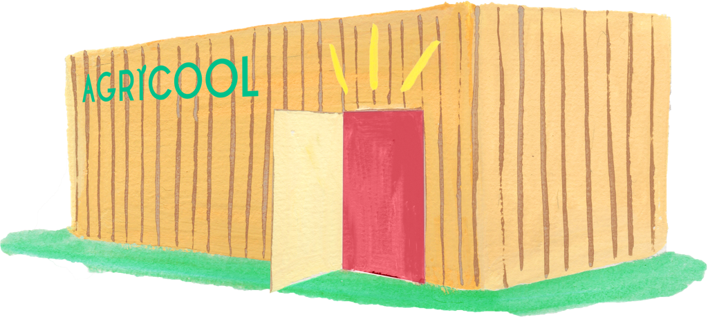
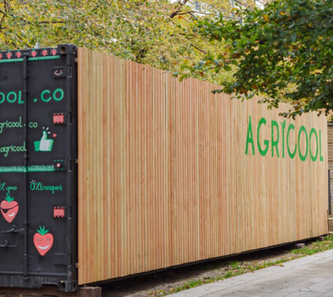
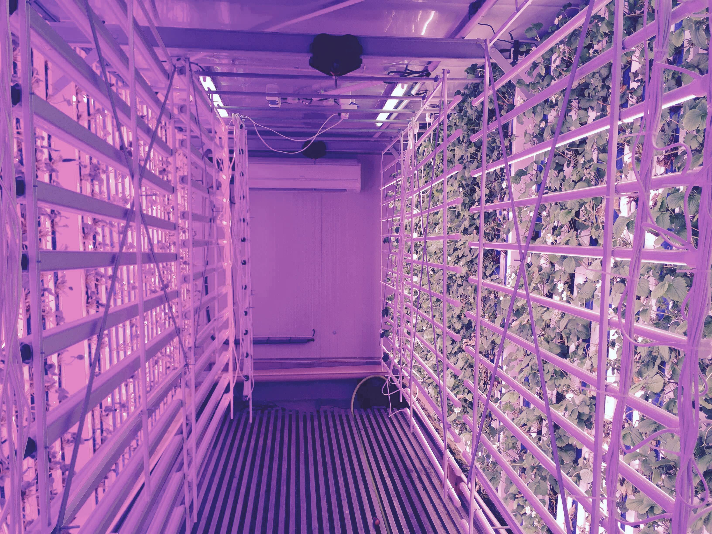

Un jardin urbain
à Paris
Elles sont là. Des fleurs magnifiques cultivées au cœur de Paris : du goût, aucun pesticide, aucun OGM. Elles sont cultivées avec 90% moins d’eau et de nutriments que dans une culture en pleine terre, et uniquement avec des énergies renouvelables.

Eliso et Nicolas
Fondateurs
« On a grandi à la campagne. On a eu cette chance de se régaler de fruits et légumes excellents et sans pesticide. Vous imaginez alors le décalage quand on est arrivés à Paris? La bonne nouvelle, c’est qu’avec une bonne dose d’optimisme, de rêve et aidés par la technologie, on a réussi à faire renaître les fraises de nos parents… et en bas de notre immeuble ! »
Des fleurs comme on les aime !
En tant que fils d’agriculteurs, nous le savons bien, le seul moyen de bien manger est de cultiver localement, là où on vit. Nous avons trouvé une solution : les Cooltainers. Imaginez des fraises qui ont poussé dans les meilleures conditions jusqu’à la dernière seconde. Imaginez un paradis pour fruits et légumes implanté au coeur de la ville.
Des fraises excellentes gorgées de vitamines

Zéro pesticide
Zéro transport
Zéro OGM
Cueillis le matin même parfaitement à maturité
90% moins d'eau
90% moins de nutriments
100% d'énergies renouvelables
Fini de voyager ! Une solution, produire localement

Un nouveau métier, les Cooltivateurs
Construisons ensemble le système alimentaire de demain !
Notre quête n’est pas facile mais elle est essentielle. Nous voulons installer des Cooltainers dans les plus grandes villes du monde pour permettre à des millions de citadins d’accéder à des fruits et légumes exceptionnels.



Newsletter
Floriswag
Histoire
Fleurs
Jardins
Equipe
FAQ
Contactez-nous
hello@floriswag.com
Mentions légales